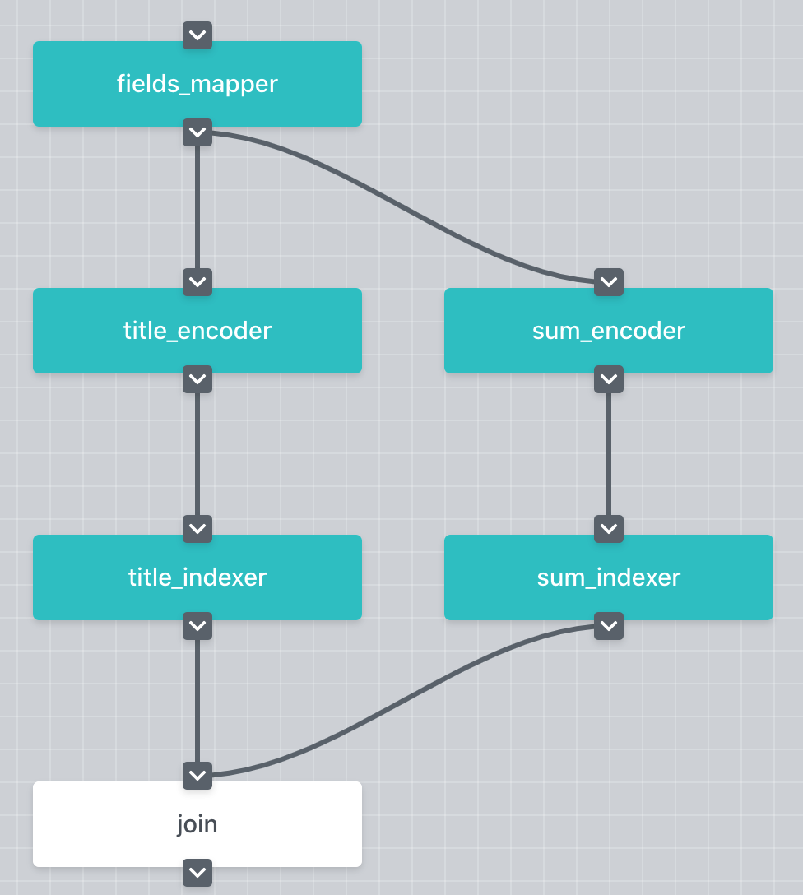

fionn_test
Table of Contents
JEP 3 — Adding support for multi-fields search
Abstract
Motivation
Rationale
Modify jina.proto
jina.proto
Adapt Index-Flow Pods
Adapt Query-Flow Pods
Specification
Open Issues
Nan Wang (nan.wang@jina.ai)
May. 28, 2020
Proposal
TBA
https://github.com/jina-ai/jina/issues/441
We propose a way to implement the multi-field search in Jina.
The Multi-field search is commonly used in practice. Concretely,
as a user, I want to limit the query within some selected fields.
In the following use case, there are two documents and three two fields in each of them, i.e. title and summary. The user wants to query painter but only from the title field. The expected result will be {‘doc_id’: 11, ‘title’: ‘hackers and painters’}.
painter
{ "doc_id": 10, "title": "the story of the art", "summary": "This is a book about the history of the art, and the stories of the great painters" }, { "doc_id": 11, "title": "hackers and painters", "summary": "This book discusses hacking, start-up companies, and many other technological issues" }
The core issue of this use case is the need of marking the Chunks from different fields. During the query time, the user should be able to change the selected fields in different queries without rebuilding the query Flow.
Chunks
Flow
Let’s take the following Flow as an example. The FieldsMapper is a Crafter that split each Document into fields and add the field_name information for Chunks. Afterwards, the Chunks containing the title and the summary information are processed differently in two pathways and stored seperately.
FieldsMapper
Crafter
Document
field_name

To add the field information into Chunks, we need first add new fields in the protobuf defination. At the Chunk level, one new field, namely field_name, is required to denote the field information of the Chunk. Each Document have one or more fields, and each field can be further splitted into one or more Chunks. In other words, each Chunk can only be assigned to one field, but each field contains one or more Chunks.
Chunk
The concept of field can be considered as a group of Chunks.
Secondly, at the Request level, we will add another new field, namely filter_by, for the SearchRequest. This is used to store the information of on which fields the user wants to query. By adding this information, the users can specify different fields to query in each search request.
Request
filter_by
SearchRequest
During index time, most parts of the Flow stay the same as before.
To make the Encoder only encode the Chunks whose field_name meet the selected fields, a new argument, filter_by, is introduced to specify which fields will be encoded. To do so, we need adapt EncodeDriver and the extract_docs().
Encoder
EncodeDriver
extract_docs()
def extract_docs( docs: Iterable['jina_pb2.Document'], filter_by: Union[str, Tuple[str], List[str]], embedding: bool) -> Tuple: """ :param filter_by: a list of service names to wait """
class EncodeDriver(BaseEncodeDriver): def __init__(self, filter_by: Union[str, List[str], Tuple[str]] = None, *args, **kwargs) super().__init__(*args, **kwargs) self.filter_by = filter_by def __call__(self, *args, **kwargs): filter_by = self.filter_by if self._request.__class__.__name__ == 'SearchRequest': filter_by = self.req.filter_by contents, chunk_pts, no_chunk_docs, bad_chunk_ids = \ extract_docs(self.req.docs, self.filter_by, embedding=False)
In order to make the Indexer only index the Chunks whose field_name meet the selected fields, we need to adapt the VectorIndexDriver as well.
Indexer
VectorIndexDriver
class VectorIndexDriver(BaseIndexDriver): def __init__(self, filter_by: Union[str, List[str], Tuple[str]] = None, *args, **kwargs): super().__init__(*args, **kwargs) self.filter_by = filter_by def __call__(self, *args, **kwargs): embed_vecs, chunk_pts, no_chunk_docs, bad_chunk_ids = \ extract_docs(self.req.docs, self.filter_by, embedding=True)
The same change goes for the ChunkKVIndexDriver.
ChunkKVIndexDriver
class ChunkKVIndexDriver(KVIndexDriver): def __init__(self, level: str = 'chunk', filter_by: Union[str, List[str], Tuple[str]] = None, *args, **kwargs): super().__init__(level, *args, **kwargs) self.filter_by = filter_by if self.filter_by else [] def __call__(self, *args, **kwargs): from google.protobuf.json_format import MessageToJson content = { f'c{c.chunk_id}': MessageToJson(c) for d in self.req.docs for c in d.chunks if len(self.filter_by) > 0 and c.field_name in self.filter_by} if content: self.exec_fn(content)
During the query time, Moreover, we need to refactor the BasePea so that the Pea gets the information of how many incoming messages are expected. The expected number of incoming messages will change from query to query because the user will select different fields with the filter_by argument. In the current version (v.0.1.15), this information is fixed and stored in self.args.num_parts when the graph is built. And the Pea will NOT start processing the data until the expected number of incoming messages arrive. In order to make the Pea handle the varying number of incoming messages, we need to make the expected number adjustable on the fly for each query. Note that the self.args.num_parts is the upper bound of the expected number of incoming messages. Thereafter, it is reasonable to set the expected number of incoming messages as following,
BasePea
Pea
self.args.num_parts
num_part = self.args.num_part if self.request_type == 'SearchRequest': # modify the num_part on the fly for SearchRequest num_part = min(self.args.num_part, max(len(self.request.filtered_by), 1))
Furthermore, the VectorSearchDriver and the KVSearchDriver also need to be adapted accordingly in order to only process the Chunks meet the filter_by requirement.
VectorSearchDriver
KVSearchDriver
class VectorSearchDriver(BaseSearchDriver): def __call__(self, *args, **kwargs): embed_vecs, chunk_pts, no_chunk_docs, bad_chunk_ids = \ extract_docs(self.req.docs, self.req.filter_by, embedding=True) ...
class KVSearchDriver(BaseSearchDriver): def __call__(self, *args, **kwargs): ... elif self.level == 'chunk': for d in self.req.docs: for c in d.chunks: if c.field_name not in self.req.filter_by: continue ... elif self.level == 'all': for d in self.req.docs: self._update_topk_docs(d) for c in d.chunks: if c.field_name not in self.req.filter_by: continue ... ...
For the use case above, the index.yml will be defined as following,
!Flow pods: fields_mapper: uses: mapper.yml title_encoder: uses: title_encoder.yml needs: fields_mapper sum_encoder: uses: sum_encoder.yml needs: fields_mapper title_indexer: uses: title_indexer.yml needs: title_encoder sum_indexer: uses: sum_indexer.yml needs: sum_encoder join: needs: - title_indexer - sum_indexer
And the mapper.yml will be defined as below,
!FilterMapper requests: on: [SearchRequest, IndexRequest]: - !MapperDriver with: method: craft mapping: {'title': 'title', 'summary': 'summ'}
The sum_encoder.yml is as below,
!AnotherTextEncoder requests: on: [SearchRequest, IndexRequest]: - !EncodeDriver with: method: encode filter_by: summ
The sum_indexer.yml is as below,
!ChunkIndexer components: - !NumpyIndexer with: index_filename: vec.gz - !BasePbIndexer with: index_filename: chunk.gz requests: on: IndexRequest: - !VectorIndexDriver with: executor: NumpyIndexer filter_by: summ - !PruneDriver {} - !KVIndexDriver with: executor: BasePbIndexer filter_by: summ SearchRequest: - !VectorSearchDriver with: executor: NumpyIndexer filter_by: summ - !PruneDriver {} - !KVSearchDriver with: executor: BasePbIndexer filter_by: summ
To send the request, one can specify the filter_by argument as below,
with flow.build() as fl: fl.search(read_data_fn, callback=call_back_fn, filter_by=['title',])
This use case can be further extened to the multi-modality search by extending the filter_by to accepting the mimitype.
mimitype